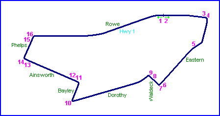
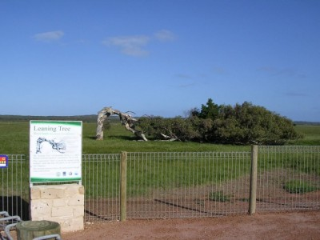

| Map of circuit location |
Geraldton, Australia
| Type: | Street Circuit | |
| Used: | 1965 | |
| Photos Taken: | 21st August, 2004 |
|| Contents || Rowe / Eastern / Waldeck | Dorothy / Bayley / Ainsworth / Phelps || Home ||

Numbers on the map represent the location where the photographs were taken. Click
hyperlinks above to view photo pages
Return to racingcircuits.net's Photo Archive Main Index

The wind is strong near Geraldton!
Photographs and information kindly supplied by Neil Fackerell